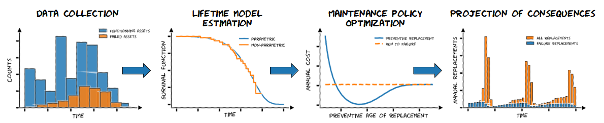
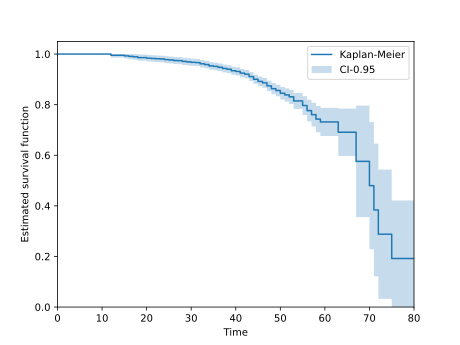
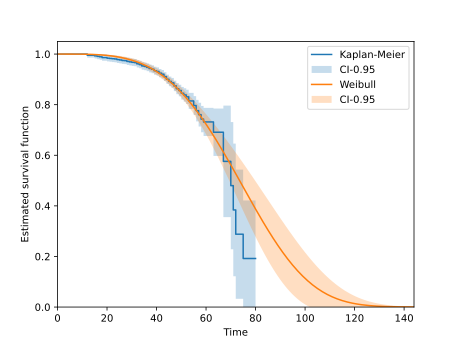
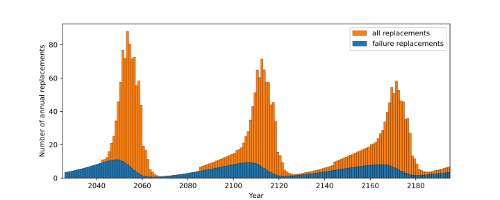

1. Getting Started#
Assetlife usage depends on the event of interest and on how that event is modeled:
Approach |
What is modeled |
Typical case |
|---|---|---|
Lifetime models |
The duration until a single unique event occurs. |
One asset, one event (e.g. a failure followed by a replacement). |
Non-homogeneous Poisson processes |
The rate of recurrent events. Each repair is minimal: it restores service without rejuvenating the asset. |
Repairable assets with several events over their life. |
Gamma processes (not implemented yet) |
A gradual deterioration measured on the asset; the event is a threshold crossing. |
Corrosion. |
This page gives an example with lifetime modeling only: one failure, one event, one replacement. See the User guides for the concepts behind each step.

AssetLife’s workflow example (lifetime modeling): from data collection to the consequences of a maintenance policy#
1.1. Data collection#
AssetLife includes example datasets so you can get started without your own data (see Datasets). Here we use the circuit breaker dataset.
>>> from assetlife.datasets import load_circuit_breaker
>>> dataset = load_circuit_breaker()
>>> dataset.dtype.names
('time', 'event', 'entry')
This dataset includes censoring and truncation that are not details to be cleaned away. They carry information, and most AssetLife estimators account for them. See Censoring and truncation.
Note
The three fields above are what a lifetime model needs: one duration per asset, plus what is known about the event and the observation window. A non-homogeneous Poisson process is fitted on something else, the sequence of failure and repair dates observed on each asset, so a single asset contributes several records instead of one. A gamma process would need deterioration measurements: a measured level and the date it was measured, repeated over the asset’s life.
1.2. Model estimation#
It’s a good idea to start with a non-parametric model, which assumes no particular shape. The Kaplan-Meier estimator is a step function that drops at each observed failure and stays flat in between, so it follows the data without imposing any parameters on it:
>>> from assetlife.lifetime_models import KaplanMeier
>>> km = KaplanMeier(
... dataset["time"], event=dataset["event"], entry=dataset["entry"]
... )
(Source code, svg)


Then fit a parametric model (here a Weibull distribution). Parametric means the whole
model is carried by a fixed, small set of numbers: fitting is estimating those numbers from the
data, and get_params reads them back.
The two fitted values are the Weibull shape and rate.
>>> from assetlife.lifetime_models import Weibull
>>> weibull = Weibull().fit(
... dataset["time"], event=dataset["event"], entry=dataset["entry"]
... )
>>> weibull.get_params()
array([3.7267452 , 0.01232326])
Overlaying the two survival functions is a common sanity check: where they agree, the parametric shape you chose is compatible with what the data shows on its own. Here they agree up to about 65 years, then the Kaplan-Meier curve drops faster than the Weibull one. Other shapes may follow the data more closely, see Parametric distributions.
(Source code, svg)


Note
fit estimates the parameters from data by maximum likelihood.
That interface is not specific to distributions: a regression
(Parametric regressions) is the same object with one extra coefficient
per covariate, and a NonHomogeneousPoissonProcess
is parametrized by the lifetime model that defines its intensity, so it is fitted from repair
histories in the same way. Non-parametric estimators such as KaplanMeier are the exception:
they hold no parameters at all, which is precisely what makes them a good first look at the data.
1.3. Maintenance policy optimization#
A model alone doesn’t say when to replace an asset. For that you wrap it in a policy. A policy is a model as well, and it has parameters of two kinds: a survival law, passed once when the policy is built, and the costs attached to each kind of event, passed to the methods that need them. Here the two costs that drive the trade-off are:
cp, the cost of a preventive replacement, that you can choose;cf, the cost of an unexpected failure, which is (almost always, some specific cases exist) higher because it includes the undesirable consequences of the failure itself.
Costs have no imposed unit: euros, dollars, millions of either, or anything else works, as
long as cp and cf use the same unit. The time unit is also freer than the method
names suggest. AssetLife follows an annual accounting convention in its naming (asymptotic_expected_equivalent_annual_cost,
annual_number_of_replacements, and a discounting_rate read as a yearly rate), because
that is the horizon asset managers budget on. But no method converts anything: the time unit
is whichever unit the lifetimes you fitted are expressed in.
>>> from assetlife.policies import AgeReplacementPolicy, RunToFailurePolicy
>>> policy = AgeReplacementPolicy(weibull)
>>> ar_star = policy.compute_optimal_ar(cf=11., cp=3., discounting_rate=0.04)
>>> round(ar_star, 4)
np.float64(58.7954)
>>> round(policy.asymptotic_expected_equivalent_annual_cost(
... ar=ar_star, cf=11., cp=3., discounting_rate=0.04
... ), 6)
np.float64(0.032612)
>>> round(RunToFailurePolicy(weibull).asymptotic_expected_equivalent_annual_cost(
... cf=11., discounting_rate=0.04
... ), 6)
np.float64(0.037242)
Replacing at optimal age ar_star (about 59 years) is roughly 12 % cheaper per year than running
the assets to failure. See AgeReplacementPolicy for where
these numbers come from.
Note
Run-to-failure and age replacement are two ends of a spectrum, where both assume the asset
is as good as new at the unique event after replacement, which is what a lifetime model
describes. When the asset is repaired instead, it is as bad as old, the decision becomes
when to stop repairing and replace:
NonHomogeneousPoissonAgeReplacementPolicy is built on a
non-homogeneous Poisson process rather than on a lifetime model. Each policy also comes in
a renewal variant, for planning a fleet over the long run, and a one-cycle variant, for
a decision about the asset currently in service. See the maintenance policies of the
API.
1.4. Projection of consequences#
Finally, project what the policy implies for a real fleet. We take 1000 assets whose current
ages are drawn from a binomial distribution, and ask for the expected number of replacements
over the next 170 years. AssetLife answers by solving the renewal equation (see
RenewalProcess).
>>> import numpy as np
>>> rng = np.random.default_rng(42)
>>> a0 = rng.binomial(60, 0.5, 1000).astype(float) # current age of each asset
>>> timeline, replacements = policy.annual_number_of_replacements(170, ar=ar_star, a0=a0)
>>> _, failures = policy.annual_number_of_failures(170, ar=ar_star, a0=a0)
>>> timeline.shape, replacements.shape
((170,), (170, 1000))
You get one value per year and per asset. Summing over the fleet gives the workload to plan for, and how much of it is unplanned failure rather than scheduled replacement:
>>> round(float(replacements.sum()), 1)
3094.1
>>> round(float(failures.sum()), 1)
813.9
AssetLife has no built-in plot for this, but the arrays go straight into Matplotlib:
(Source code, svg)


The replacement waves you see are the fleet’s current age distribution propagating forward: assets installed around the same time come due around the same time, and the peaks flatten over successive cycles.
Note
What gets projected follows from the model that was fitted. With a lifetime model, the renewal equation counts unique events occurrences, over a horizon expressed in the time unit of the fitted data (170 years here, because the circuit breaker lifetimes are in years). With a non-homogeneous Poisson process, the same step projects the expected number of repairs, and a replacement count only appears once a replacement decision is put on top of it.
1.5. Next steps#
User guides for the concepts (censoring and truncation, lifetime models, maintenance policies) behind the calls above.
API for the full reference.